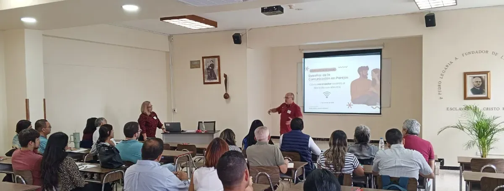
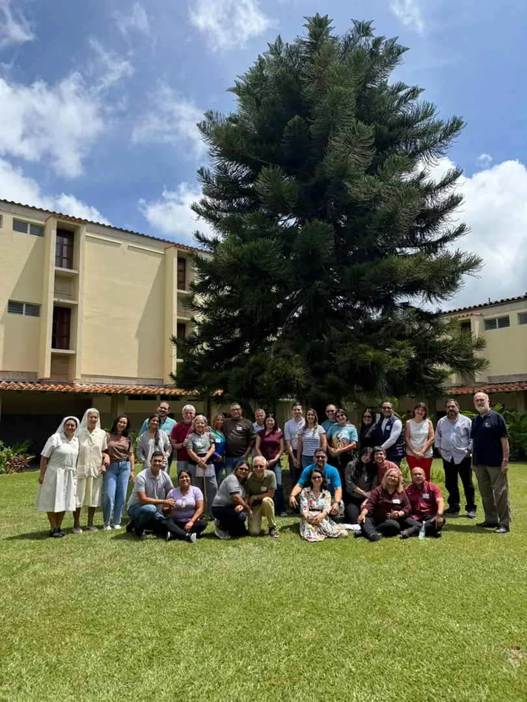
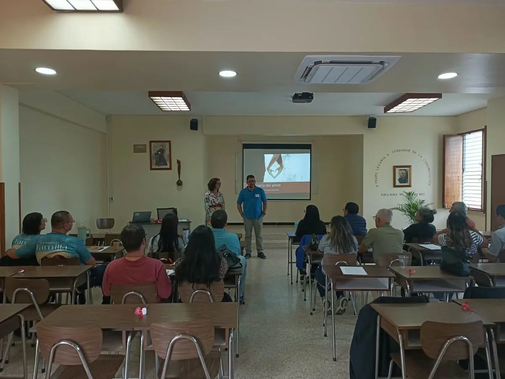
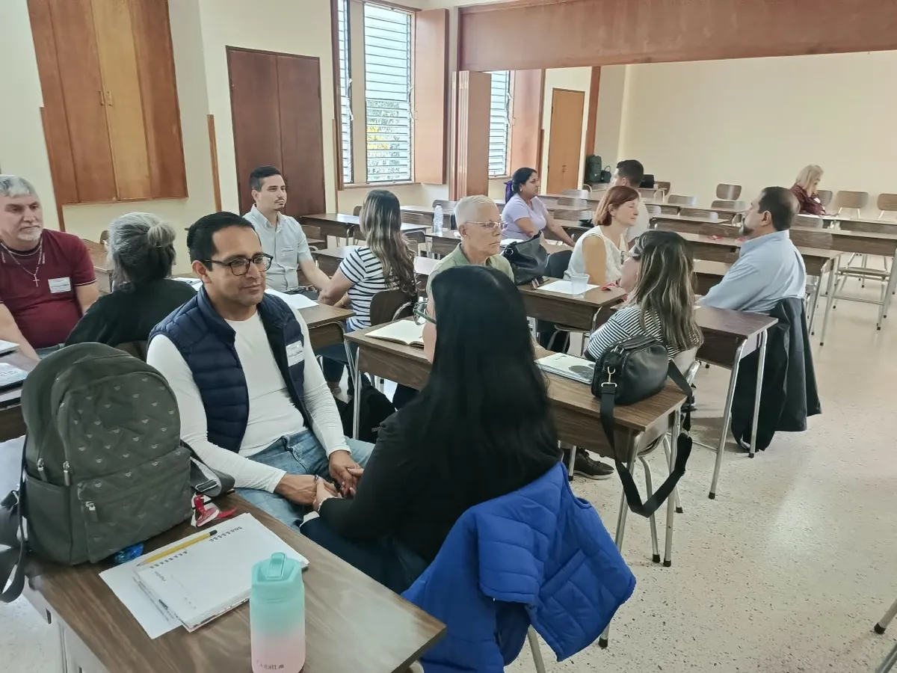
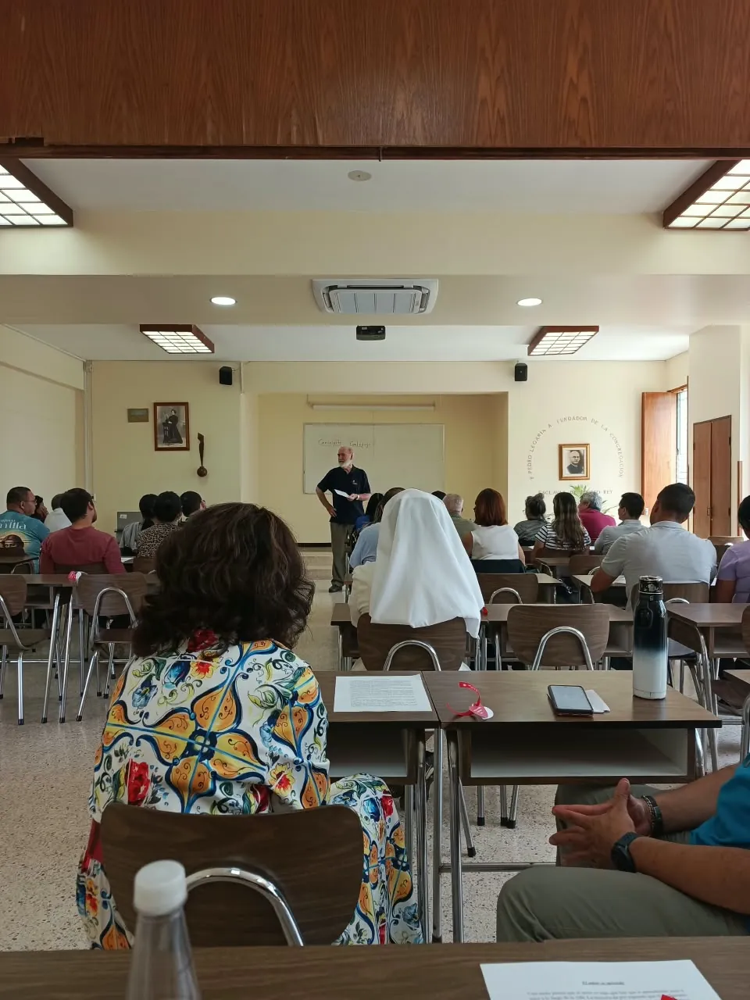
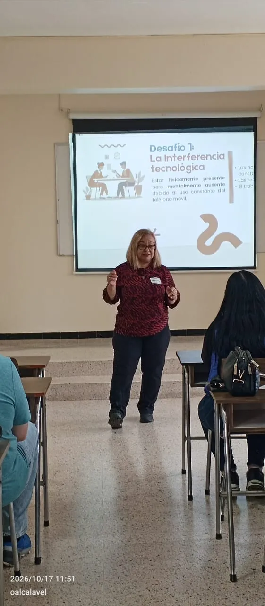

RealizadoRealizadoEncuentro · Familia
II Encuentro de Parejas, «Amarse en lo cotidiano»
Jornada para matrimonios sobre la comunicación conyugal, el sábado 17 de octubre en El Hatillo, con espiritualidad ignaciana y la «Conversación en el Espíritu».

Datos del evento
- Fecha
- Sábado 17 de octubre de 2026
- Modalidad y lugar
- Presencial · Casa de Retiro de las Esclavas de Cristo Rey, El Hatillo
- Organiza
- Área de Familia del Centro de Laicos, Familia y Juventud
- Estado
- Realizado
Cómo fue
El sábado 17 de octubre, los matrimonios trabajaron en la Casa de Retiro de las Esclavas de Cristo Rey, en El Hatillo, los desafíos de la comunicación en la pareja. Usaron la espiritualidad ignaciana y la «Conversación en el Espíritu». Un jesuita los acompañó espiritualmente. Una pareja participante dejó su testimonio, que la nota recogió sin nombrarla.
Qué se hizo
- Trabajaron la comunicación conyugal con espiritualidad ignaciana y «Conversación en el Espíritu».
Quién participó
- Jannet de Rivas y Pedro Rivas, coordinadores del Área de Familia.
- Los coordinadores de Pastoral Familiar de la Arquidiócesis de Caracas.
- Un jesuita, que acompañó espiritualmente.
Cifras
- 11 matrimonios, según la nota de la CEV del 19 de octubre de 2026.
Galería

II Encuentro de Parejas, «Amarse en lo cotidiano», Casa de Retiro de las Esclavas de Cristo Rey, El Hatillo, sábado 17 de octubre de 2026. Salón con parejas sentadas durante una charla, con una pantalla proyectada. Crédito: CEV Medios, fuente: Área de Familia del Centro. 
II Encuentro de Parejas, «Amarse en lo cotidiano», Casa de Retiro de las Esclavas de Cristo Rey, El Hatillo, sábado 17 de octubre de 2026. Foto de grupo de las parejas y facilitadores en el jardín de la casa de retiro, con un pino al fondo. Crédito: CEV Medios, fuente: Área de Familia del Centro. 
II Encuentro de Parejas, «Amarse en lo cotidiano», Casa de Retiro de las Esclavas de Cristo Rey, El Hatillo, sábado 17 de octubre de 2026. Parejas sentadas en el salón atienden la charla. Crédito: CEV Medios, fuente: Área de Familia del Centro. 
II Encuentro de Parejas, «Amarse en lo cotidiano», Casa de Retiro de las Esclavas de Cristo Rey, El Hatillo, sábado 17 de octubre de 2026. Participantes con una mochila y cuadernos durante un trabajo en el salón. Crédito: CEV Medios, fuente: Área de Familia del Centro. 
II Encuentro de Parejas, «Amarse en lo cotidiano», Casa de Retiro de las Esclavas de Cristo Rey, El Hatillo, sábado 17 de octubre de 2026. Participantes sentadas en el salón, entre ellas una religiosa. Crédito: CEV Medios, fuente: Área de Familia del Centro. 
II Encuentro de Parejas, «Amarse en lo cotidiano», Casa de Retiro de las Esclavas de Cristo Rey, El Hatillo, sábado 17 de octubre de 2026. Una facilitadora expone ante una pantalla con el tema «Desafíos de la comunicación». Crédito: CEV Medios, fuente: Área de Familia del Centro.